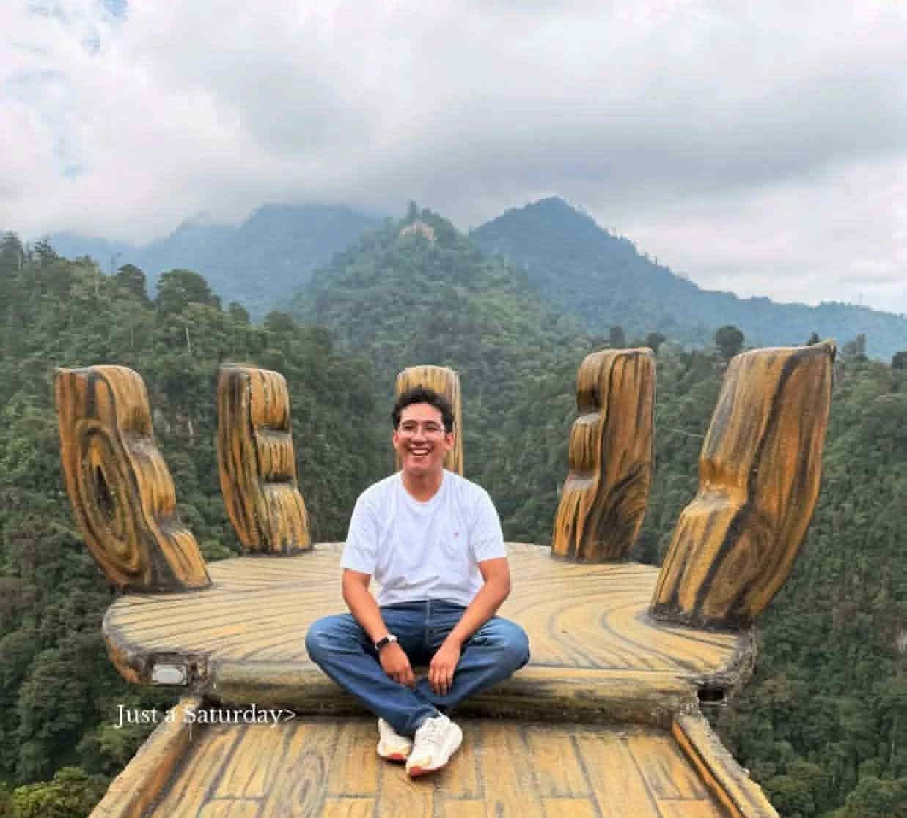
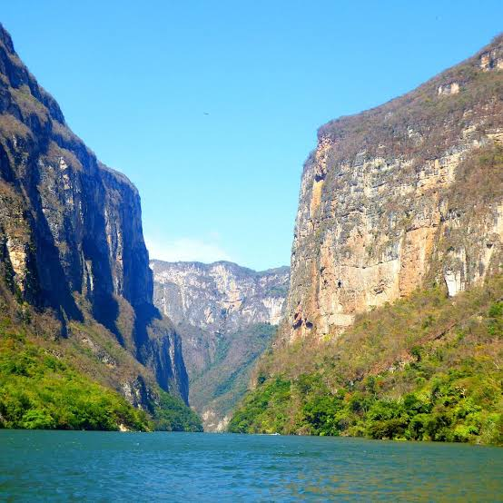

Daniel Canek Rosales Rosas
About me

Hello everyone, my name is Daniel Canek Rosales Rosas. I live in Chiapas, México. I'm currently enrolled in WDD 131. I love to take pictures, and I enjoy going outside on trips, sometimes I do some hiking. Some of my hobbies are: Watching films (specially italian, japanese, and french), reading books (currently reading "The Chronicles of Narnia"), and watching TV Shows.
Chiapas, México

Something that I really love about Chiapas is its rich cultural heritage. I also enjoy exploring the natural beauty of the region, such as the stunning mountains and rivers.